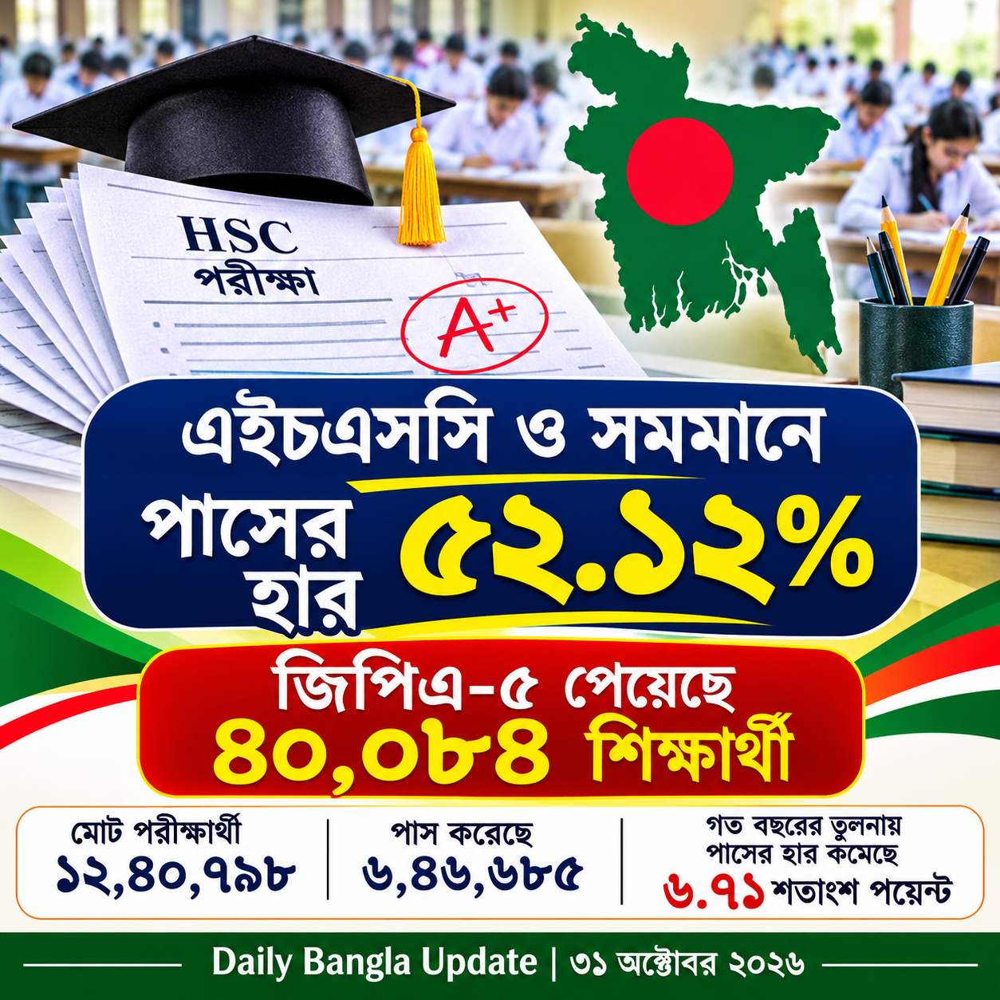

এইচএসসি ও সমমান পরীক্ষার ফল প্রকাশ: পাসের হার ৫২.১২%, জিপিএ-৫ পেয়েছেন ৪০,০৮৪ জন
নিজস্ব প্রতিবেদক | Daily Bangla Update

২০২৬ সালের এইচএসসি ও সমমান পরীক্ষার ফলাফল ৩১ অক্টোবর প্রকাশ করা হয়েছে। বাংলাদেশ সংবাদ সংস্থা (BSS)-এর প্রকাশিত তথ্য অনুযায়ী, ১১টি শিক্ষা বোর্ডের অধীনে মোট ১২ লাখ ৪০ হাজার ৭৯৮ জন পরীক্ষার্থীর মধ্যে ৬ লাখ ৪৬ হাজার ৬৮৫ জন উত্তীর্ণ হয়েছেন। সামগ্রিক পাসের হার ৫২.১২ শতাংশ। জিপিএ-৫ পেয়েছেন ৪০ হাজার ৮৪ জন শিক্ষার্থী।
গত বছরের তুলনায় ফলাফল
২০২৫ সালে পাসের হার ছিল ৫৮.৮৩ শতাংশ। সে বছর জিপিএ-৫ পেয়েছিলেন ৬৯ হাজার ৯৭ জন। এ বছর পাসের হার কমেছে ৬.৭১ শতাংশ পয়েন্ট এবং জিপিএ-৫ পাওয়া শিক্ষার্থীর সংখ্যা কমেছে ২৯ হাজার ১৩ জন।
ছাত্র ও ছাত্রীদের ফলাফল
BSS-এর ফলাফল বিশ্লেষণ অনুযায়ী, উত্তীর্ণদের মধ্যে ২ লাখ ৯০ হাজার ১৫৭ জন ছেলে এবং ৩ লাখ ৫৬ হাজার ৫২৮ জন মেয়ে। অর্থাৎ উত্তীর্ণ মেয়ের সংখ্যা ছেলেদের চেয়ে ৬৬ হাজার ৩৭১ জন বেশি।
ফলাফল কীভাবে দেখবেন?
শিক্ষার্থীরা শিক্ষা বোর্ডের নির্ধারিত অনলাইন ফলাফল পোর্টালে রোল ও প্রয়োজনীয় তথ্য দিয়ে ফলাফল দেখতে পারবেন।
পুনর্নিরীক্ষণের আবেদন
The Business Standard-এর ৩১ অক্টোবরের প্রতিবেদন অনুযায়ী, ফল পুনর্নিরীক্ষণের আবেদন ১ নভেম্বর থেকে ৭ নভেম্বর ২০২৬ পর্যন্ত অনলাইনে করা যাবে। আবেদন পদ্ধতি ও ফি সম্পর্কে সংশ্লিষ্ট শিক্ষা বোর্ডের বিজ্ঞপ্তি অনুসরণ করুন।
সংবাদ সূত্র
- বাংলাদেশ সংবাদ সংস্থা (BSS): পাসের হার ও জিপিএ-৫ সংক্রান্ত প্রতিবেদন
- The Business Standard: ফলাফল ও পুনর্নিরীক্ষণের সময়সীমা
Daily Bangla Update — খবর, চাকরি, অনলাইন কাজ, প্রযুক্তি ও শিক্ষার প্রয়োজনীয় তথ্য এক জায়গায়।
হোমপেজে ফিরে যান